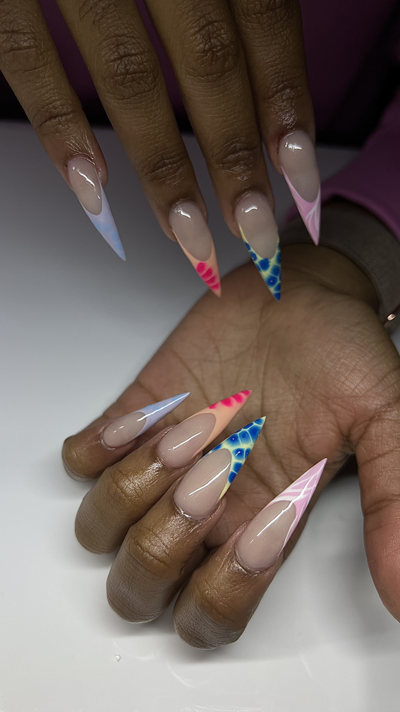
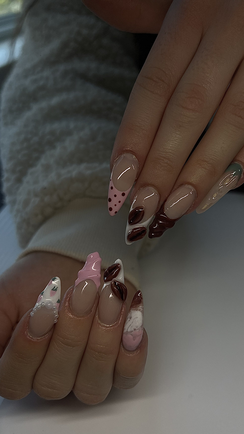
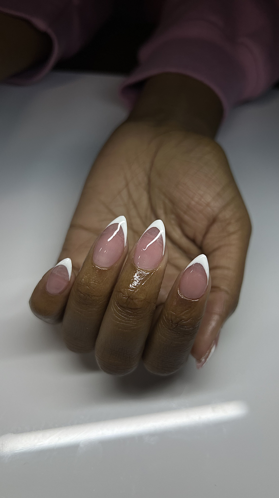
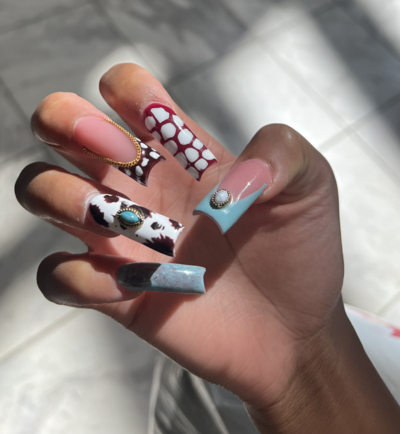
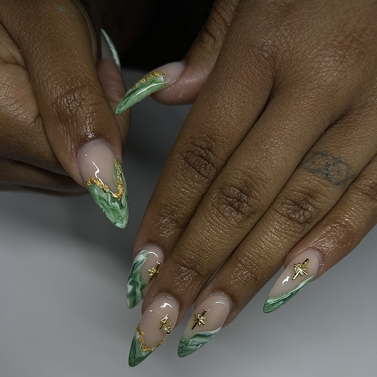

What
What Are Acrylic Nails?
Acrylic nails are a type of nail enhancement that can be shaped, painted, and decorated to create unique looks. They are made using a mixture of liquid monomer and a powder polymer that hardens into a strong, durable nail.
Why They're Interesting
Acrylic nails allow for creativity and self-expression. Every set is different, and artists can experiment with colors, shapes, patterns, and seasonal themes.
About This Site
Welcome to my hobby site about acrylic nails! This site is designed to introduce visitors to the world of nail art by exploring what acrylic nails are, why they are so popular, and how they serve as a creative outlet for self-expression. Whether you're new to nail design or already a fan, I hope this site helps you appreciate the artistry behind every set.

Source: Me
Who
My name is Camren Ifeacho, and I have been interested in nails since I was in middle school. I started doing nails as a hobby because I wanted to express my creativity and have fun with colors and designs. Anyone can enjoy this hobby, whether you're a beginner or an experienced nail artist.

Source: Me
When
Describe the best times or seasons for this hobby.
Include schedules or timing tips.
Explain seasonal variations.

Source: Me
Where
List the best locations for this hobby.
Include local or global spots.
Explain why these places are ideal.

Source: Me
How
Explain how to perform the hobby.
Include steps, tips, or techniques.
Provide helpful guidance.

Source: Me
Why
Explain why this hobby matters.
Share personal motivation.
Describe benefits or meaning.

Source: Me
AI Prompts
I used Copilot to generate the following prompts:
- “Generate a photorealistic image related to my hobby.”
- “Write a paragraph explaining the basics of this hobby.”
- “Create a cartoon-style image of people enjoying this hobby.”